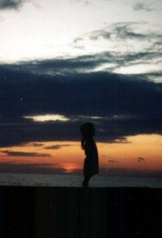

La face cachée du
Mont Saint-Hilaire
Chapitre II — The Season Of The Witch

Certaines personnes regardent
là où les autres ne regardent pas...
là où les autres ne regardent pas...
Elles voient donc ce que
d'autres ne voient pas...
d'autres ne voient pas...
Ouvrons les
yeux
Il y a toujours un revers à une médaille (!)
Il y a toujours un revers à une médaille (!)

Ici tout semble normal...
Mais prenez le temps de regarder autour.